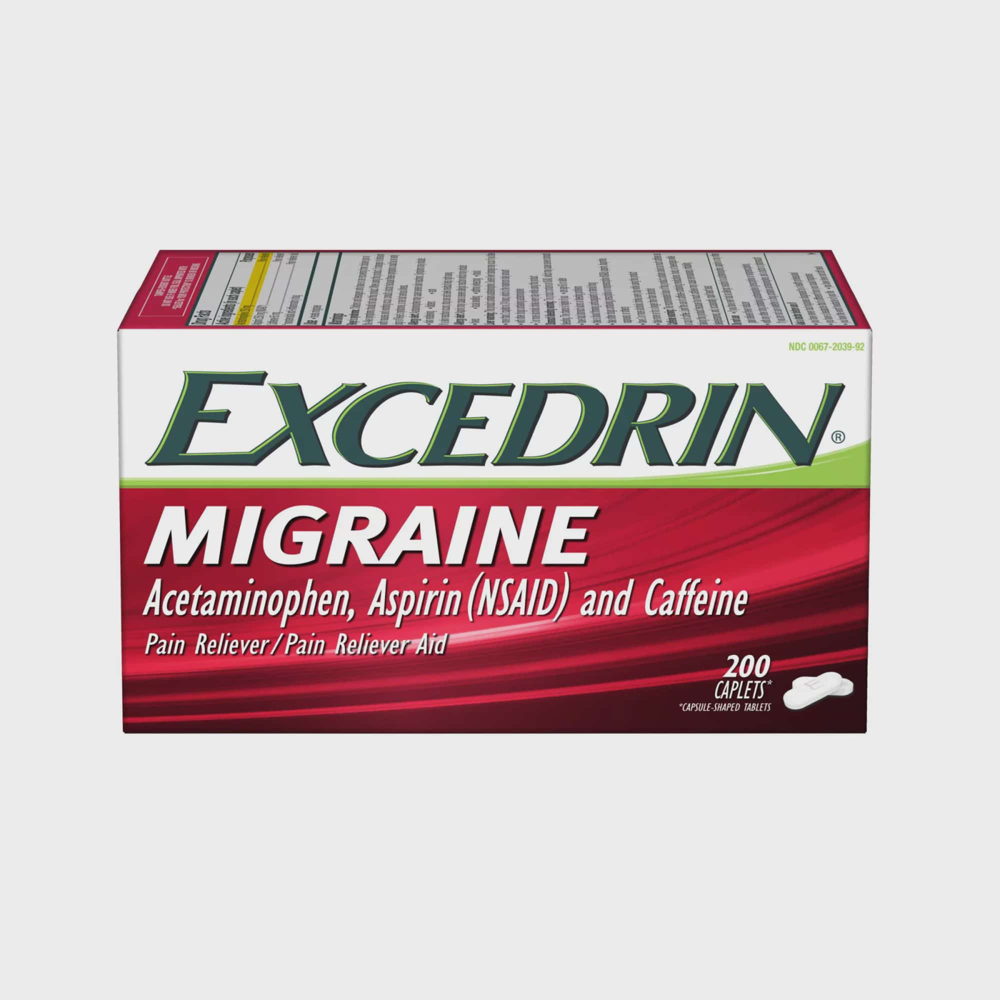

Doctors usually treat headaches with over-the-counter (OTC) medications or prescription
Doctors usually treat headaches with over-the-counter (OTC) medications or prescription
treatments. They may also recommend preventive and alternative remedies for more severe
cases.Headaches can occur from time to time,and their symptoms may vary from mild to severe.
A person may experience tension or migraine headaches.While someone can usually treat
headaches with OTC pain relievers, more severe headaches or repeated attacks may require
prescription medication.
Medication For Mild Headaches
We all usually suffer from mild headaches, due to any reason like work load,extra workout or any other
reasons.One should atleast know the names types for headache's and their cure.For mild headaches
Medicines with less caffeine can affect very well.Medicine for mild headaches are like "Crocin" with less
power and less caffeine
Medication For Migraine
 If you have migraines or a family history of migraines, a doctor trained in treating headaches (neurologist) will likely diagnose migraines based on your medical history, symptoms, and a physical and neurological examination. Migraine has become common problem now a day's.For instant but temporary relief one can take medicine which contains high amount of caffaine, Medicine like "Excedrin" works well for migraine.